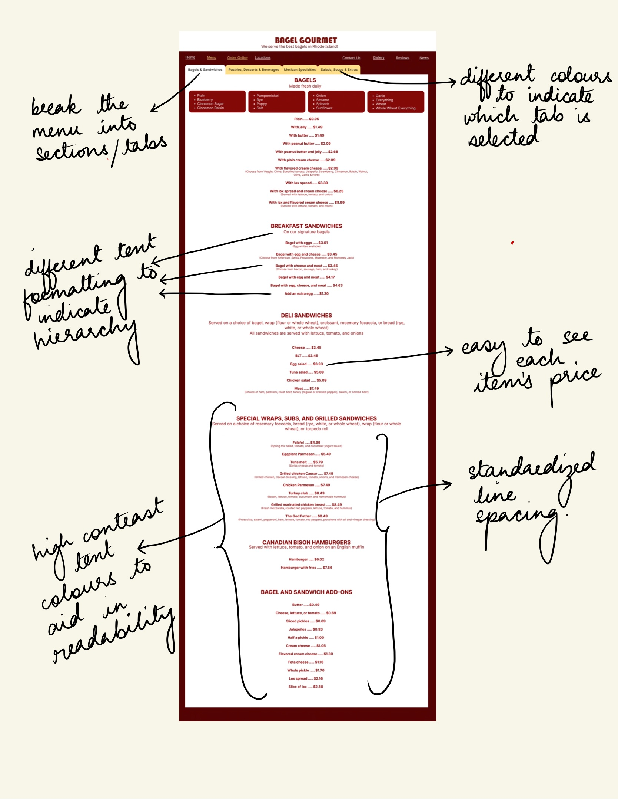

This project focused on redesigning a page of website that had
significant shortcomings when it came to usability,
learnability, memorability, and accessibility.
I chose to redesign the menu page of Bagel Gourmet, a popular
chain of bagel restaurants in Providence, RI. While this page
does convey all the necessary information, its layout and visual
elements could be greatly improved.
The image below shows the top of the menu page. Interestingly
enough, though bagel gourmet specializes in selling bagels, the
first section on their menu is "Mexican Specialties" instead of
"Bagels". There are multiple other issues outlined below.
-
The logo used here is not the same as the logo seen at
Bagel Gourmet stores in Providence. Further, it is
difficult to read due to poor text contrast.
-
There is a lot of unused white space on the website,
which could be better used by changing the layout or
increasing the font size.
-
The font size and formatting is mostly uniform
throughout the section shown here. The website mostly
uses font colour and bold or italicized text to
differentiate blocks of text, though this is not
standardized throughout either. This makes it difficult
to establish a visual heirarchy. The arrangement of text
is awkward, with irregular spacing and indentation, with
irregular spacing between the menu item and its price,
with the price sometimes being on a different line.
-
The navigation panel on the left is also slightly
misleading. The "Shopping cart" option may lead a user
to think that they can add menu items to their shopping
cart by clicking on them on this page, and that this
option would simply show them the items they have
already added to their cart.
The image below shows the menu page after one scrolls further
down. This section, which is further down the menu website,
shows the bagel options available at Bagel Gourmet.
-
In addition to the issues highlighted above, some other
new issues become apparent in this section. The layout
suddenly changes to a two-column layout instead of the
one-column layout present further up on the website.
-
There are also large blocks of text, especially when
listing the bagel offerings, which may lead to the user
simply skimming the block or ignoring it altogether.
-
The prices in this section are also missing some digits.
All items that cost less than a dollar do not have the
leading zero, which may be confusing to customers at
first glance and may lead to their misreading or
misinterpreting the price.
-
Another issue with this website, which isn't apparent
from these screenshots, is the fact that the entire menu
is presented on the same page, which can make it
difficult for a user to find the section they are
interested in.
-
The menu items were also laid out in no particular order
within their respective sections, which could also be
confusing to users who might expect more expensive items
to occur towards the end of the section. This is also
not apparent from the two screenshots provided, but is
more noticeable upon scrolling through the entire
webpage.
I also used the WebAim WAVE tool to evaluate the accessibility of
the original webpage. Several issues were identified by the tool,
which are summarized in the image below. In addition to having a
missing page title, no language setting, and multiple instances of
empty headings and images with no alt text, there were also many
contrast errors, which I had noticed too. Further, there were
several instances of null alt text that were mistakenly identified
as additional features by the tool, but which were actually problematic
because they were attached to images that did not have captions
associated with them.
I tried to address the issues raised in the original page's
accessibility report by improving the contrast in text, avoiding
empty headings, etc. I also tested my final webpage using the tool
to ensure I didn't create any additional accessibility issues in
my redesign. The redesigned page's accessibility report is summarized
in the image below.
Visual Redesign - Lo-fi Prototype
Based on the issues I identified with the original website, I
constructed a low-fidelity prototype of a redesigned website.
I constructed prototypes of the website as it would appear
on a laptop/desktop, a tablet, and on a phone using Balsamiq.
Include the three lo-fi protypes constructed for the website and
a few sentences on the main vision for the improved layout.
Annotate wireframes to point out improvements in design.
The image below shows the low-fidelity wireframe for laptops,
with annotations pointing out the problems that the redesigned
website would address.
-
The most significant change invovled breaking up
the menu into sections that could be accessed using a
tab bar. This makes it somewhat easier for the user to
locate items they are interested in, and also quickly
gives the user an idea of the variety of foods offered.
-
Changing the "Shopping cart" option to "Order online"
also ensured the user's conceptual model of the website
was closer to the actual model. "Order online" is more
likely to signal to the customer that they cannot order
items from this webpage and that they should navigate
to a different page to order online.
-
Another major change was bringing the "Bagels" to the
top of the menu, which made sense since the restaurant
specializes in making bagels.
-
I also broke up the big block of text listing the bagel
varieties into smaller itemized lists, with each variety
on its own line. Users are less likely to skip or skim
over this section because of the list format.
-
I also played with font sizes to demonstrate hierarchy
in the menu. I also removed the pictures from the menu
on the original website, so the menu items came directly
under their section header, providing a degree of visual
continuity within sections.
-
Lastly, I made sure there were no missing digits, so all
prices were displayed in the same format, making it less
likely that a customer would misread or misinterpret the
price.
Enclosed below are all the wireframes for the laptop website.
Enclosed below are the wireframes for the tablet and phone
websites respectively.
Visual Redesign - Hi-fi Prototype.
While the Balsamiq wireframes showed how the website could be
improved on a lot of fronts, I wanted to explore further
improvements in terms of the text formatting and colours used.
Based on the visual style guide and the low-fidelity prototype,
I constructed three high-fidelity prototypes of the website for
different screen sizes (laptop, tablet, phone) using Figma.
An annotated image of the laptop and tablet prototype is shown
below, highlighting improvements made in addition to those made
by the low-fidelity wireframe. Salient HTML and CSS features are
also annotated with red ink.

-
The menu was broken into sections or tabs, with
different colours used to distinguish the active tab
from all the other tabs.
-
Text was formatted differently to emphasize hierarchy.
-
Section headers are in bold text, with
uppercase lettering and a larger font
size.
-
Section subtitles are in lower case, but
in a large font size.
-
Menu items are bold and in a slightly
smaller font thant the section header,
while additional information about the
menu item is in normal font that is of a
smaller size than the rest.
-
Prices of items were places closer to the item,
with a line of ellipses to guide the reader's eye to
the amount corresponding to each item.
-
A dark red colour was used for all the text, which
stood out in contrast to the white background of the
menu. Line spacing was also standardized to maintain
visual continuity.
-
The body of the page has four main elements: the header
(logo), the navigation bar, the menu, and the footer. The
background of the entire page is the deeper burgundy colour
from the style guide, while the background colours of other
elements are independently edited.
-
All items on the webpage are centre-aligned, as is all the text
on the webpage.
-
The menu itself is an element with uniform margins, with flex
display. It is broken into sections that contain additional
sub-elements.
-
Each section of the menu contains two or more elements. Each section
has a header and a container with the list of menu items. Some
sections have a section subtitle between the header and the list of
items.
-
One element that is unique to the Bagels section is the section listing
the various bagel varieties offered. This element was constructed using
a CSS grid with four columns, each containing one unordered list of
four items.
The three images below show the website prototype when deployed
on different devices (laptops, tablets, and phones).